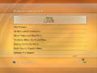

Gaming News |
Dozens more Xbox gamesplayable on 360Microsoft releases another list of tweaks for its current console's backward compatibility list; update adds Panzer Dragoon Orta, Jet Set Radio Future, Mercenaries, and more.
Roughly 17 months after the launch of the Xbox 360, Microsoft is bringing the Xbox 360 backward compatibility list above the 300 mark. The company today added dozens of original Xbox titles to its official backward compatibility list, with highlights including Sega releases Jet Set Radio Future and Panzer Dragoon Orta, as well as Pandemic Studios' Mercenaries: Playground of Destruction and Microsoft's MechAssault 2: Lone Wolf.
When asked if this would be the final backward compatibility update, a Microsoft representative told GameSpot that while there were no details to share yet, "don't expect this to be the final update." The following is a list of games added to the backward compatibility list in the latest update:
Avatar: The Last Airbender --top-- |
PCs, 360s, PS3s getting LostProducers of hit show Lost reveal that the game is in development for the Xbox 360, PlayStation 3, and PC.
As Lost heads into the homestretch of its third season, the show is also venturing into new territory--the realm of games. Last May, Ubisoft announced that it was making a game based on the sci-fi drama and that the game would be released in 2007 on unspecified consoles and handhelds as well as the PC.
The publisher has been as quiet on details as Mr. Ecko was during his vow of silence, but earlier this week a few nuggets of information leaked courtesy of the show's producers, Damon Lindelof and Carlton Cuse.
Speaking on their weekly Lost podcast, the two television execs answered a fan's e-mail regarding the game's platforms. Lindelof confirmed that the game is headed to the Xbox 360, and Cuse stated that it will also be on the PC and PlayStation 3. The two didn't get into details, saying only that Ubisoft Montreal showed them a "very impressive" demo of the game and that it would be "really cool," though "not as cool as Galaga."
Mobile game developer Gameloft has also taken advantage of the doomed passengers of Flight 815. The company has released Lost The Mobile Game, which features Jack as a playable character and a storyline created by Lost writers. --top-- |
360 dashboard update detailedand demonstrated[UPDATE] Fresh coat of features added to Microsoft's next-gen console; download manager, dashboard startup, camera functionality among changes. Full video demonstration inside!Though the Xbox 360 has only been on the market for just over six months, the console is getting its first major facelift. Microsoft today announced the first of what it hopes will be biannual major updates to the console's functions and user interface.
The Xbox 360 spring platform update does not have an official release date yet, but Microsoft hopes to have it ready for download over Xbox Live about a week from today. The update is the first considerable change to the 360 since its launch in November 2005 and is largely based on consumer feedback.
[UPDATE] As shown in the extensive video demonstration below, many of the changes focus on making things easier to find when navigating the "blades" interface or downloading content on Xbox Live Marketplace. A new Media and Entertainment category has been added to the Marketplace menu, which features options to search for movie trailers and short films, television promos, music videos, and others instead of lumping them all together.
360 Update Demo--NEW! The other Marketplace categories have also been revamped. For example, game demos can be searched by genre, themes and gamer pictures have their own section, and game videos (that is, trailers) have been properly separated from movie trailers.
While 360 users have adored the ability to download content onto their machines, they've hated being pinned to the download screen, unable to perform any other activities during the process. The new download manager will allow up to six downloads to be queued up and prioritized, freeing gamers to continue browsing, playing music, or get some gaming in. Lag in online play shouldn't be a factor with background downloading. Once an online session is initiated, all downloads will pause, opening up bandwidth for the game. Once the player leaves the online game, downloading will resume.
When a download is complete, the content can be immediately accessed or applied. Just downloaded a trailer for BioShock? No need to navigate back through the menus like before--just select "play" when the notification comes up. Themes can also be instantly applied, rather than sifting through one's personal settings.
Other updates to the various media functions of the 360 include fast forward or rewind capabilities (up to 16x speed) in Marketplace videos, improved data retrieval for names of CDs and individual tracks, and the ability to resume playback on a DVD from where it was last stopped.
Sometimes, 360 owners just want to unwind with a game of Geometry Wars Evolved or listen to some tunes, but when powering on the machine, the game that was in the drive boots up. Not anymore. Gamers will have the option of setting the 360's default startup to the dashboard or whatever disc is in the drive.
The system's online functions will also have a few extras, as well. Now when a gamer is idle, it will say so on players' friends lists. There will also be an option to have separate gamer pics for friends and the general public. Presumably, this is gearing up for the compatibility with the Xbox 360 camera peripheral, which is supported by this update even though it won't be released until this fall. Until then, gamers can use available pics.
Though the update sounds like it will take up a large chunk of space, it doesn't require a single byte on the hard drive. It actually doesn't need a hard drive at all. The update is flashed to the 360's internal hardware and won't be stored on the hard drive, making it compatible with either SKU of the Xbox 360. It will initially be available online and may be available on disc further down the road.
Microsoft is already at work on a fall update, which the company says will be even more robust and will include more features. --top-- |
| © 2007 ABC Company, All Rights Reserved. |